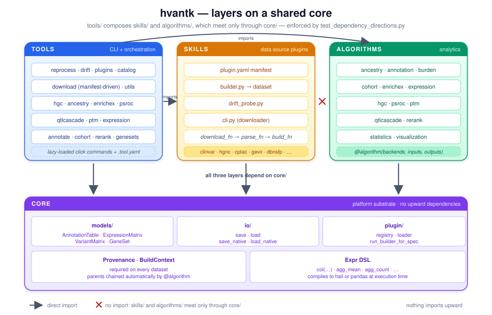

hvantk¶
Hail-based toolkit for multi-omics variant annotation and analysis.
hvantk turns public omics resources (variants, genes, proteins and expression) into datasets with provenance, and integrates them in analysis tools that help interpret genetic variants. It uses Hail for genome-scale tables and AnnData for expression matrices.
- Data-source plugins. 21 providers, among them ClinVar, gnomAD, GTEx, UniProt,
dbNSFP and Expression Atlas. Each dataset builds with one command,
hvantk reprocess <provider>:<dataset>. - Provenance on every dataset. A build records the source fingerprint, schema, plugin version and parameters next to its output, and a derived dataset keeps its parents.
- Drift detection.
hvantk driftcompares a source's live fingerprint with the one committed in the repository. A scheduled job re-checks every source twice a month. - Analysis tools. Joint genotyping, ancestry inference, QTL cascades, enrichment and burden tests, PTM variant classification, pathogenicity-score evaluation, gene annotation matrices and multi-omic gene re-ranking.
Get started¶
- Installation: Python, Java 11, Poetry, and the optional extras.
- Quick start: build two datasets and run an enrichment test in ten minutes.
Build datasets¶
| Page | What it covers |
|---|---|
| Building datasets | hvantk reprocess, the plugin registry, drift checks, the catalog and utilities |
| Data sources | Every dataset, how to acquire it, and the build command |
| Running on HPC | The container image and Hail jobs on a Slurm cluster |
| Workflow skills | Skills that let a coding agent run hvantk for you |
Analyse¶
| Tool | Command | Use it to |
|---|---|---|
| HGC | hvantk hgc |
Joint-call gVCFs into a VDS and MatrixTable, with QC |
| Ancestry inference | hvantk ancestry-inference |
Assign genetic ancestry from a labelled reference panel |
| Gene annotation matrix | hvantk annotate |
Join gene-level sources into one gene × feature matrix |
| External cohorts | hvantk cohort |
Validate a cohort's gene-level results and attach them |
| Re-rank | hvantk rerank |
Re-rank genes by multi-omic evidence |
| EnrichEx | hvantk enrichex |
Test gene sets for overlap and case-control burden |
| Gene sets | hvantk genesets |
Build gene-set files from ClinGen, GenCC, COSMIC or your own lists |
| PS-ROC | hvantk psroc |
Evaluate pathogenicity scores per gene set against ClinVar |
| PTM | hvantk ptm |
Classify variants by their position relative to PTM sites |
| QTL cascade | hvantk qtlcascade |
Link eQTLs to pQTLs and colocalise with GWAS |
| Expression analysis | hvantk expression |
Summarise .h5ad matrices and extract marker genes |
The examples walk through each tool on small inputs.
How it fits together¶

Data-source plugins (skills/) and analysis code (algorithms/) never import each
other; they meet only through the four dataset types in core/. A source can change
upstream without breaking an analysis. Architecture explains the
design, and Contributing shows how to add a source, an algorithm or a
command.
Citation¶
If you use hvantk in your research, please cite:
@software{hvantk2024,
title = {hvantk: Hail-based toolkit for multi-omics variant annotation and analysis},
author = {Perez-Riverol, Yasset and Audain, Enrique},
year = {2024},
url = {https://github.com/bigbio/hvantk}
}
License and support¶
hvantk is released under the MIT License. Each data source keeps its own terms; see THIRD_PARTY_DATA.md. Report bugs and ask questions in GitHub Issues.